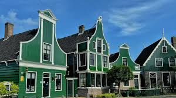
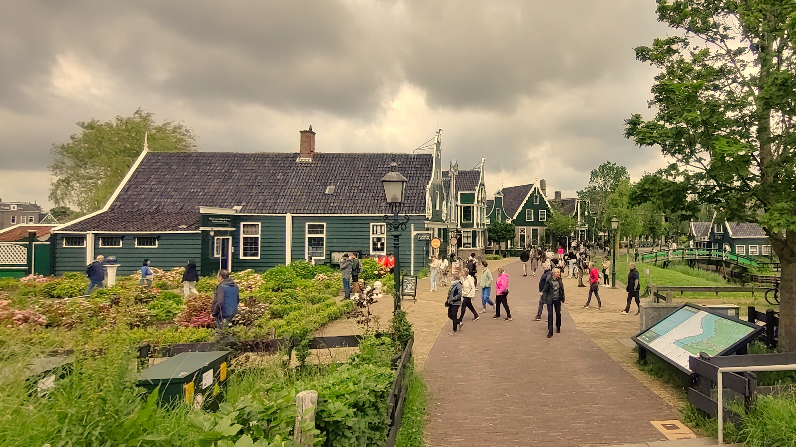
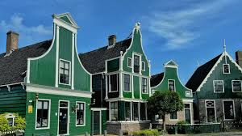
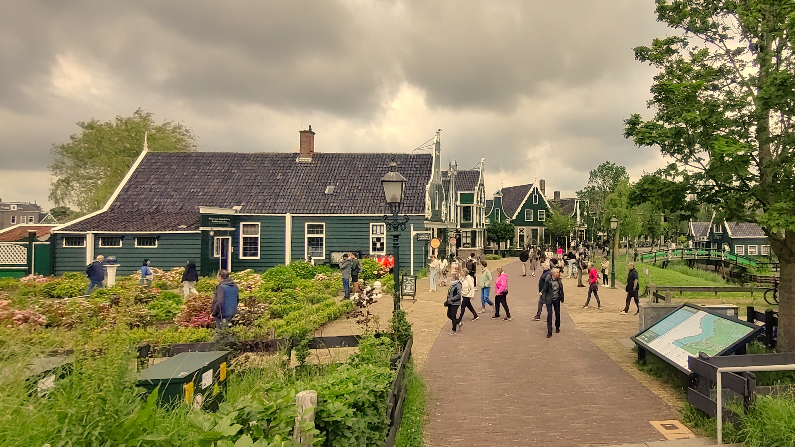

A city where history flows through canals and creativity blooms around every corner.
Amsterdam in winter was a revelation wrapped in mist and golden light. The canals created a rhythm to the city that was both ancient and thoroughly modern.
Canal Ring Magic
Walking the UNESCO-listed canal ring at dawn became my daily ritual. The concentric waterways, lined with narrow houses that leaned toward each other like old friends, told the story of the Dutch Golden Age.
Museums and Masterpieces
The Rijksmuseum and Van Gogh Museum were windows into the Dutch soul. Standing before Rembrandt's Night Watch, I understood how light could be captured and transformed into something eternal.
Local Life
Amsterdam's true charm revealed itself in quieter moments: warming up with stroopwafels at local markets and experiencing gezelligheid in cozy brown cafés.


 


